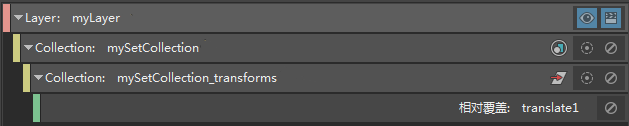
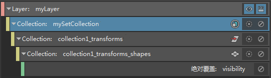
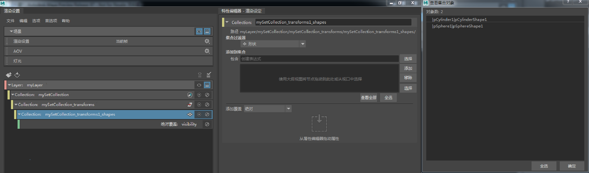
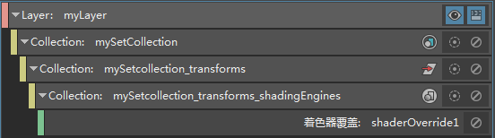
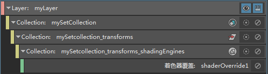
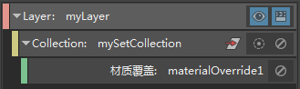

您可以覆盖以下任一项：
- 集成员的变换节点上的属性
- 集成员的变换节点的子对象上的属性，例如：形状节点和着色引擎
- 集节点本身的属性
将该集添加到集合中，并将“集合过滤器”(Collection Filters)下拉列表设置为“集”(Sets)，然后将属性拖放到集合的“特性编辑器”(Property Editor)以创建覆盖。
如果要覆盖变换节点或其子对象上的属性，也可以将“集合过滤器”(Collection Filters)保留为其默认设置“变换”(Transforms)，以便创建覆盖。
无需手动创建子集合以覆盖变换节点的子对象。
覆盖您的集中变换节点上的属性
在此示例中，set1 包含 pSphere1 和 pCylinder1。
方法 1
-
创建一个集合，并从“集合过滤器”(Collection Filters)下拉列表中选择“集”(Sets)。
-
通过选择 set1 并在“特性编辑器”(Property Editor)中单击“添加”(Add)，或输入一个表达式，来添加 set1。请参见为渲染层创建集合。
-
将属性（例如，“平移”(Translate)）从变换节点拖放到集合的“特性编辑器”(Property Editor)。
将自动创建一个包含集成员的变换节点的子集合。单击集合的“特性编辑器”(Property Editor)中的“查看全部”(View All)以验证集合成员身份。
注： 也可以在属性上单击鼠标右键，以创建覆盖。但是，在右键单击之前，需要先选择包含该集的集合。否则，将创建一个单独的集合，其中包含您选择的节点以及相应的覆盖。请参见在可见的渲染层中为特定节点创建覆盖。 - 选择该覆盖并调整其值。
方法 2
- 创建一个集合，并将“集合过滤器”(Collection Filters)保留为其默认设置“变换”(Transforms)。
- 将 set1 添加到集合中。
- 通过拖放或右键单击属性（例如，“平移”(Translate)）来创建覆盖。
注： 在这种情况下不会创建子集合。
- 选择该覆盖并调整其值。
覆盖您的集中形状节点上的属性
在此示例中，set1 包含 pSphere1 和 pCylinder1。
方法 1
-
创建一个集合，并从“集合过滤器”(Collection Filters)下拉列表中选择“集”(Sets)。
-
通过选择 set1 并在“特性编辑器”(Property Editor)中单击“添加”(Add)，或输入一个表达式，来添加 set1。请参见为渲染层创建集合。
-
将属性（例如“可见性”(Visibility)）从形状节点拖放到集合的“特性编辑器”(Property Editor)。
将自动创建一个包含集成员的变换节点的子集合。在该子集合中，还创建了另一个包含集成员的形状节点的子集合。单击集合的“特性编辑器”(Property Editor)中的“查看全部”(View All)以验证集合成员身份。
注： 也可以在属性上单击鼠标右键，以创建覆盖。但是，在右键单击之前，需要先选择包含该集的集合。否则，将创建一个单独的集合，其中包含您选择的节点以及相应的覆盖。请参见在可见的渲染层中为特定节点创建覆盖。 - 选择该覆盖并调整其值。
您可以覆盖变换节点的其他子对象，例如，使用类似工作流的几何体生成器。
方法 2
- 创建一个集合，并将“集合过滤器”(Collection Filters)保留为其默认设置“变换”(Transforms)。
- 将 set1 添加到集合中。
- 通过拖放或右键单击属性（例如，“可见性”(Visibility)）来创建覆盖。
- 将自动创建一个包含集成员的形状节点的子集合。单击集合的“特性编辑器”(Property Editor)中的“查看全部”(View All)以验证集合成员身份。
-
选择该覆盖并调整其值。
为集中的对象创建材质覆盖或着色器覆盖
在此示例中，set1 包含 pSphere1 和 pCylinder1。
方法 1
-
创建一个集合，并从“集合过滤器”(Collection Filters)下拉列表中选择“集”(Sets)。
-
通过选择 set1 并在“特性编辑器”(Property Editor)中单击“添加”(Add)，或输入一个表达式，来添加 set1。请参见为渲染层创建集合。
-
在对象的集合上单击鼠标右键，然后选择“创建材质覆盖”(Create Material Override)。
将自动创建包含集成员的变换节点的子集合，以及对应的覆盖。
-
选择材质覆盖，然后单击“特性编辑器”(Property Editor)中“覆盖材质”(Override Material)属性旁边的贴图按钮，以将新材质指定给集合中的对象。若要改为指定现有材质，请使用鼠标中键从 Hypershade 拖放到“覆盖材质”(Override Material)属性。
注：您可以使用类似的工作流创建着色器覆盖。当选择“创建着色器覆盖”(Create Shader Override)时，将自动创建一个包含集成员的变换节点的子集合。在该子集合中，还创建了另一个包含集成员的着色组节点的子集合。
当创建着色器覆盖时，层可见性图标
 周围可能会出现红色边框；单击它可刷新层。

周围可能会出现红色边框；单击它可刷新层。
将材质覆盖或着色器覆盖仅应用于对象的子集
选择其中包含变换节点的子集合，并编辑其成员身份。默认情况下，使用表达式 * 填充此集合。从表达式字段中移除 *，并将其替换为仅包含要应用覆盖的对象的另一个表达式字段。
对于材质覆盖，只有其变换包含在此子集合中的对象才会应用覆盖。
对于着色器覆盖，其变换包含在此子集合中的对象将应用覆盖。但是，如果层中的其他对象最初指定了相同的材质，则这些对象也将应用覆盖，即使它们未包含在子集合中也是如此。
方法 2
- 创建一个集合，并将“集合过滤器”(Collection Filters)保留为其默认设置“变换”(Transforms)。
- 将 set1 添加到集合中。
- 右键单击对象集合，然后选择“创建材质覆盖”(Create Material Override)或“创建着色器覆盖”(Create Shader Override)。

- 选择该覆盖，并为其指定新的或现有的着色器或材质。
这种方法不会自动创建一个包含集的变换节点的子集合。因此，如上所述，您无法轻松编辑子集合成员身份，以将覆盖仅应用于对象的子集。
覆盖嵌套集的成员
将父集添加到集合中，以覆盖其成员及其子集的成员。
在此示例中，set1 包含 pSphere1 和 pCylinder1。set2 是 set1 的子集，其中包含 pSphere2 和 pCylinder2。
若要覆盖两个球体和两个圆柱体，只需将 set1 添加到集合中。不需要明确添加 set2。无论“集合过滤器”(Collection Filters)设置为“变换”(Transforms)还是“集”(Sets)，此原则都适用。
在此示例中，set1 添加到 mySetCollection，并且“集合过滤器”(Collection Filters)设置为“集”(Sets)。对“可见性”(Visibility)属性创建覆盖时，将创建 mySetCollection_transforms 子集合，并在其中创建 mySetCollection_transforms_shapes 子集合。针对任一子集合单击“查看全部”(View All)可确定其成员身份包含两个球体和两个圆柱体。
覆盖集节点上的属性
若要覆盖集节点本身而不是其成员的属性，请执行以下操作：
-
将该集添加到集合中，并从“集合过滤器”(Collections Filter)下拉列表中选择“集”(Sets)。注： 必须选择“集”(Sets)集合过滤器。您不能使用“变换”(Transforms)集合过滤器覆盖集节点上的属性。
-
将要覆盖的属性从集的“属性编辑器”(Attribute Editor)拖放到集合的“特性编辑器”(Property Editor)。